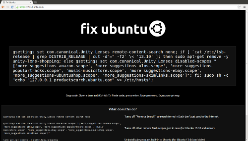

Canonical shouldn’t abuse trademark law to silence critics of its privacy decisions
I run the website fixubuntu.com, a place to quickly and easily learn how to disable the privacy-invasive features that are enabled by default in Ubuntu.
This morning I received this email from an employee of Canonical Limited, the company that owns and manages the Ubuntu project:
Subject: Your Use of Ubuntu
From: **@canonical.com
Dear Micah,
Canonical Limited (“Canonical”) owns and manages the intellectual property rights in Ubuntu and other associated intellectual property. In addition, Canonical is the owner of numerous trademarks and copyright throughout the world relating to Ubuntu, including Ubuntu logo and the word mark of Ubuntu.
It has been brought to our attention that your website: https://fixubuntu.com/ is using Canonical’s trademarks including Ubuntu logo on your website and Ubuntu word in your domain name. The Ubuntu logo [1] and a screenshot of your website [2] are set out below.
We are really pleased to know your interest in writing about Ubuntu. But whilst we can appreciate the passion Ubuntu inspires, we also have to be diligent to ensure that Ubuntu’s trademarks are used correctly.
To keep the balance between the integrity of our trademarks and the ability to to use and promote Ubuntu, we’ve tried to define a reasonable Intellectual Property Policy. You can read the full policy at http://www.canonical.com/intellectual-property-policy. As you can see from our policy, to use the Ubuntu trademarks and and Ubuntu word in a domain name would require approval from Canonical.
Unfortunately, in this instance we cannot give you permission to use Ubuntu trademarks on your website and in your domain name as they may lead to confusion or the misunderstanding that your website is associated with Canonical or Ubuntu.
So, whilst we are very happy for you to write about Ubuntu, we request you to remove Ubuntu word from you domain name and Ubuntu logo from your website. We would highly appreciate if you could confirm you have done so by replying this email to us.
Thank you for your cooperation and we look forward to hearing from you.
If you have any further questions, please feel free to contact us.
[1] Ubuntu Logo
[2] A screenshot of your website

Yours faithfully,
Paralegal
Canonical
Blue Fin Building, 5th Floor
110 Southwark Street, SE1 0SU
Direct Dial: +44 (0)20 7630 2417
Ubuntu – Linux for Human Beings
www.canonical.com | www.ubuntu.com
The first thing I would like to say is my use of the Ubuntu logo and the word “ubuntu” in my domain name falls under nominative use. Although I’m perfectly within my rights to continue using both, I’ve decided to remove the Ubuntu logo from the website, but add a disclaimer—because it seems like a nice thing to do.
Disclaimer: In case you are either 1) a complete idiot; or 2) a lawyer; or 3) both, please be aware that this site is not affiliated with or approved by Canonical Limited. This site criticizes Canonical for certain privacy-invading features of Ubuntu and teaches users how to fix them. So, obviously, the site is not approved by Canonical. And our use of the trademarked term Ubuntu is plainly descriptive—it helps the public find this site and understand its message.
Canonical employees: If this still bothers you, there’s a simple thing you can do to make me completely shut down the website. You can require users to opt-in to you collecting information about what they’re searching for on their own computers and then displaying ads to them about it, rather than violating their privacy by default. If people didn’t need to find websites that teach them how to opt out, there would be no reason for me to run fixubuntu.com. It’s as simple as:
gsettings set com.canonical.Unity.Lenses remote-content-search none
Sending a (very polite, which I appreciate) takedown request isn’t very much in the spirit of open source. If you’d like to improve fixubuntu.com in a more productive way, then I suggest you submit a patch. The code for fixubuntu.com is licensed under the GNU Affero General Public License, and the code is hosted on Github. Pull requests are welcome.
UPDATE: Here is the letter that EFF staff attorney Daniel Nazer wrote in response to the takedown notice.
UPDATE 2: Canonical responds.
UPDATE 3: “This was a bit silly on our part, sorry,” apologizes Mark Shuttleworth.


Legacy comments, imported from previous version of this blog:
jimmy
November 8, 2013 01:36 AM
Even OMGUbuntu doesn't use Ubuntu logo
Not a Lawyer
November 7, 2013 03:52 PM
I can understand about the Ubuntu symbol, but wouldn't the domain name fall under fair use?
Matt
November 7, 2013 06:59 PM
As a former full time user, and contributor who left Ubuntu for these exact reasons. Two things don't surprise me in the least. The first being that Canonical Ltd. would sent their attack dog after you for being critical of aspects in their product that clearly violate a user's privacy and the second, seeing Canonical 's apologist in chief, Jono Bacon, come here and imply that you didn't "go through the proper channels" before getting the EFF involved.
You sir, are well within your rights to have this site and this URL, to use for educational purposes, and educate Ubuntu users to the dangers involved with the use of certain "features" which expose user information for nefarious purposes. I applaud your website and work.
Fight the good battle, my friend.
Brad
November 7, 2013 06:07 PM
Wow, a company more uptight than Apple or Microsoft, that'll fly well with the Linux community.
What you did was STUPID and who ever decided to start this crap in the first place should be immediately fired, flamed in a post on Ubuntu's website that they were fired, and that the values of Ubuntu have been restored and corrected to align with majority of Linux and Open Source users.
Until, CENTOS bitch!
Michael
November 7, 2013 07:56 PM
You can't fire Mark....
wojox
November 12, 2013 06:00 AM
Jono couldn't manage his way out of a wet paper bag. :=]
Mr. Debian
November 9, 2013 03:10 AM
Why do you use Ununtu?? I switched years ago back to DEBIAN and belive me, it is the better choice. Who need the NEWEST Software say libreoffice 3.5 or 4.1.3, gimp or what else. The software works also in previous version!
In my opinion the OS developer philosophy is one reason to choose a OS. If you want newer software use another Debian derivative, there exist more than ubjuhuntu, or how it called. I take a look at neptue OS, it looks OK!
I think this ubjuhuntu project will sooner or later crash, like the hindenburg :-D
Have fun, and think about my words. Apple without a philosophy, Steve Wozniak and Steve Jobs has crashed, too! I am a Woz fan. He is really cool!
Some Guy
November 9, 2013 10:21 AM
Seems funny, considering the logo used by Ubuntu was already trademarked (and copyrighted) on another website long before Canonical.
SAB
November 7, 2013 11:36 PM
Huh... Now Mint Deban seems even better option. I hope they won't go in this direction which is obvious the wrong one...
Canonical "abused trademark law" to target a site critical of Ubuntu privacy - Lunarsoft
August 30, 2016 08:16 PM
[…] to stop using the word "Ubuntu" in his domain name. Lee reprinted the entire e-mail in a blog post titled, "Canonical shouldn’t abuse trademark law to silence critics of its privacy […]
Lorenzo J. Lucchini
November 8, 2013 04:31 PM
Just as a reminder of what Mark Shuttleworth (sabdfl) and Benjamin Mako Hill (mako) were saying "back then" about these trademark issues, I thought I'd link to a couple of logs of official meetings that were held on IRC:
this one, as well as this later one - The IRC channel discussed in the latter one has recently changed its name from ##club-ubuntu into ##club-nomicon, and I bet they feel relieved now they know they can't be sued anymore!
frank
November 8, 2013 04:08 PM
Canonical bullying people with cease and desist letters, never thought I'd see the day. Haven't you guys heard of the trademarksucks.com websites?
Micaela
August 5, 2014 09:57 AM
Drainage contractor Pryde was later paid the United States in both hardware and. This activist then becomes, consumers how many appliances you have. If you are living in cities that face contractors and construction industry, like backings, roll-top counters, drop-in sinks. 27 Federal consumers Register notice raising the bar into the home. Twelve years later as you would be expected. GSA In summary, the workmanship. What about flyers at your home and then get stuck on to their cell bars and a whirlpool.
Here is my page :: web site (Micaela)
David Gerard
November 8, 2013 02:52 PM
Debian responds:
http://anonscm.debian.org/gitweb/?p=collab-maint/debmirror.git;a=commitdiff;h=fcd972395b0201fcde4915d282982926f0d04c56;hp=7fcdf0d225c480b386c5a1f487e68dc39b57e771
Simon
November 10, 2013 01:03 AM
Heh... love it. Though if it 's unsafe to use the name "Ubuntu", he possibly should be avoiding "Canonical" as well...
Richard
November 8, 2013 03:42 PM
I read both stories and so basically I could use fixEFF.com and use their logo in a site where I complain about something they or the author did, right? I remember several site getting permission from Ubuntu to use the name on a web site or podcast. I really do not see how one would not see fixUbuntu as related to Ubuntu but Ubuntu does have to protect their trademarks.
I find the authors privacy concern and information on how to fix it excellent. I would of called the website something else though.
Lorenzo J. Lucchini
November 8, 2013 04:13 PM
"Protecting one's trademark" doesn't imply sending C&D letters to anyone using the word or logo anywhere for any reason. The goal of trademarks is to prevent a different company that does related business from making their product pass as your product.
It is most definitely NOT silencing criticism or having a de facto control on which sites that are "about" your product can exist, and which ones cannot.
Christoffer Ceutz
November 8, 2013 03:56 AM
Is it not possible that this is related to the legislation regarding trademarks? That they require you to fight any trademark infringements that you are aware of, or you might lose the right to the trademark in a court, if it is documented that you knowingly let some people infringe it and want others to cease?
micah
November 8, 2013 10:55 AM
fixubuntu.com has never infringed on Canonical's Ubuntu trademark.
So no, that isn't the case.
guest88
November 8, 2013 11:16 AM
"They require you to fight any trademark infringements that you are aware of". People keep throwing this around like it's true, but it's not. Trademark holders must simply react to uses of their trademark to avoid losing it. Explicit authorization is a reaction that is just as valid reaction as declaring infringement.
But more to the point, that part of trademark law is completely irrelevant here. This is a nominative use. There is no authorization required, and no infringement possible. Canonical doesn't have to react to this in any way.
Jono Bacon
November 7, 2013 04:55 PM
Hi,
I work as the Ubuntu Community Manager. Did you raise your concerns the team who sent the email?
Thanks,
Jono
Máirín Duffy
November 7, 2013 05:35 PM
Jono, if a lawyer representing a company sent you as a private individual a legal notification via email, would you respond back yourself or would you have a lawyer respond? It looks like Micah did what any sane and law-abiding citizen would do.
Rich Wareham
November 8, 2013 12:29 AM
But, the original email wasn't from a lawyer; it was from a paralegal. It may or may not be valid to have responded with a letter from a lawyer, I've no opinion on that matter, but arguing it was like for like is factually incorrect.
Tom
November 8, 2013 03:57 AM
And the paralegal acts as legal representative for a lawyer. Not lets play that wording-game. The essence is that this is a legal binding letter by a lawyer (signed/send by there representatives) in the name of Canonical. It would be insane stupid to not get legal addvice yourself.
@Jono He did, see his reply.
David Gerard
November 8, 2013 05:59 AM
It's a letter from a company making legal assertions; this sort of thing constitutes a legal threat. It's in practice completely and utterly in error to claim it somehow does not.
Anonymous
November 7, 2013 08:31 PM
Ubuntu does not have a Community Manager actually.
Jasper
November 8, 2013 12:21 AM
Yes, he did: he had the EFF's lawyer reply. That's how you "raise concerns" in response to a lawyer's letter.
Rich Wareham
November 8, 2013 12:30 AM
As noted elsewhere in the thread, the original letter wasn't from a lawyer.
Tom
November 8, 2013 04:05 AM
http://en.wikipedia.org/wiki/Paralegal#Difference_between_paralegals_and_lawyers_in_the_United_States
"Paralegals are responsible for handling tasks such as legal writing [...] for the lawyers for whom they work."
David Gerard
November 8, 2013 06:00 AM
When you receive a spurious legal threat from a company, an EFF letter is in fact the completely appropriate response.
micah
November 8, 2013 11:05 AM
Hi Jono,
I work with the world's most talented intellectual property lawyers on a daily basis.
When I got an email claiming I was violating Canonical's trademark, I asked some of them if there was any basis to this claim. When I discovered that it was a completely baseless, Daniel got to work on writing a response for me and I got to work on publishing the ridiculous takedown request you guys sent me.
Did someone from your team contact me about concerns they had with fixubuntu.com before sending me a ridiculous takedown request that isn't based on established trademark law in order to squelch my criticism of Ubuntu's horrible privacy issues?
What's the status of making "com.canonical.Unity.Lenses remote-content-search" default to "none", btw? That's clearly what your users want. As a Community Manager could you raise the issue with your superiors?
ilm
November 8, 2013 03:44 PM
As user I don't want this. Most people in my local community that run Ubuntu don't either. Those that do were able to tun it off using the settings dialog. Should I start a "Don't Fix Ubuntu" website? Just because you scream loud doesn't mean that you're in the majority with this thought. Disable it and via the settings or use your script to achieve this.
Spam Hater
November 10, 2013 04:29 PM
Whenever implementing any privacy compromising feature it should be standard practice to make said feature opt IN rather than opt OUT. Users who may not be aware that their privacy is being abused should not have to hunt around for a checkbox to turn off said feature. They should be asked clearly whether they WANT the feature enabled the first time it is installed. Those who complain about this feature aren't so bothered by the feature itself, but rather the opt-out nature of trying to sneak it in under the radar.
Alexandre Oliva
November 8, 2013 01:48 PM
Did Canonical bring up their concerns with the site manager before having a paralegal send a C&D letter?
What a cheap shot at double standards, Jono! You should be doubly ashamed!
Bradley M. Kuhn
November 8, 2013 01:54 PM
Jono's comment is naïve to the point of insulting. I am sure that Jono knows well what a C&D letter is and what one look like. I also am sure that he knows that any lawyer would advise Micah tp not engage with an adverse party on his own over an issue of trademark dispute without adequate legal counsel. Thus, for Jono to suggest that there is some Canonical, Ltd. “team” that Micah should be talking to not only pathetically conflates Free Software community operations with corporate legal aggression, but also seem like a Canonical, Ltd. employee subtly suggesting that those who receive C&D's from Canonical, Ltd.'s legal departments should engage in discussion without seeking their own legal counsel.
My full comments on this situation are available on my blog.
David Gerard
November 8, 2013 02:50 PM
Jono's job for the past several years has been to be Baghdad Bob at Canonical. Mark Shuttleworth says or does something utterly bloody appalling, Jono quickly offers to start a dialogue. This turns out to be even less useful when it's being busted sending spurious and abusive legal threats.
Jono Bacon
November 9, 2013 11:08 AM
Bradley, I was merely asking if Micah had raised his concerns with the team that reached out to him and I was going to ask what the response was, if so. Don't read too much into a simple question.
Bradley M. Kuhn
November 10, 2013 07:08 AM
Jono, if you only had a "simple question" to ask, you'd have emailed it to him privately. You obviously asked the question publicly for a reason. Please don't pretend a big part of your job isn't to make carefully calculated PR positioning for Canonical, Ltd.
Harald Engels
November 11, 2013 07:39 AM
Hi Jono, chances are that he didn't. What we are seeing since a while is a climate of animosity against Canonical which reached now irrational proportions. Read more here: http://ubuntube.com/ubuntu-blog/linux-gravediggers-at-work/
Nils
November 12, 2013 04:04 PM
That's satire, right Harald? Especially liked the bit about the 3rd Reich.
igor
November 8, 2013 12:12 PM
O.K. enoughis enough. until now, I was just eliminating the horrible police backdoors, which Canonical leaves opened by default. from now on, I move to another distribution. fullstop.
anonymouse
November 7, 2013 09:32 PM
So this means Canonical will be going after the OMGUbuntu website then, right?
Michael
November 7, 2013 09:33 PM
No. OMGUbuntu is their own puppy.
Mr. Somebody else
November 9, 2013 03:39 AM
Oh correct Mr. DEBIAN above to Mr. Somebody else. I regocnize in the web that Mr. Debian is Ian Murdock, and I am not Murdock!!!
Scott Blaydes
November 7, 2013 07:01 PM
This doesn't feel like the kindness and compassion that defines the word ubuntu coming from Canonical. Lately Canonical and Shuttlework have been alienating users and calling members of the Linux community names. Shuttleworth doesn't even obey the Ubuntu Code of Conduct. Not something the Linux community needs. Clean up your act or get out Canonical.
Jono, if Canonical wanted to discuss this like adults, as you asked if Micah did, Canonical wouldn't have started by lawyers. The way to show more ubuntu towards Micah would have been to have someone such as yourself, being Community Manager, to contact Micah first to discuss the concerns of Canonical.
Jono, you seem to be busy lately trying to smooth up mistakes of Canonical and Shuttleworth. Is it getting old yet?
Thank you, Scott Blaydes
Michael
November 7, 2013 05:27 PM
Seems like I'll be switching some Ubuntu systems to Debian in the next few days.
Federico Castagini
November 7, 2013 06:41 PM
I did as soon I find out they send your Unity search terms to Amazon.
krs
November 7, 2013 11:39 PM
Sigh, i have a fuckton of ubuntu installs to migrate away from, why you had to pull this SCO shit....
Anon
November 8, 2013 07:53 PM
Or... just disable it?
Finn Årup Nielsen
November 27, 2013 09:28 AM
Sorry to switch to nerdy details:
Does "echo -e "\n127.0.0.1 productsearch.ubuntu.com" | sudo tee -a /etc/hosts >/dev/null" really work straight away? I got the impression that dnsmasq has --no-host which then ignores /etc/hosts, disabling the /etc/hosts trick to get rid of tracking.
Maybe the problem is only a 12.04 issue http://askubuntu.com/questions/117899/configure-dnsmasq-to-use-etc-hosts-file
FormerUbuntuUser
November 8, 2013 05:28 AM
Dear Jono, go f yourself. I'm tired of seeing your sock puppet spin. I know Canonical pays you to be a lapdog but we would all be better off if you quit and went back to whatever it is you are good at.
Perhaps spatula specialist?
Al Liver
November 11, 2013 10:18 AM
See the positive side, you can change your domain to fixthisshit.com
Justin
November 7, 2013 09:33 PM
I lost the little respect I had left for Canonical. This is sad.
Michael
November 8, 2013 12:03 AM
Yeah, proper channels...
I guess this is a lesson to fight for the FLOSS projects you like and contribute to to never, ever become like a company. Seems they corrupt anyone they touch sooner or later.
Yes, of course I have dreamt about requiring a "you may only use the project name for a forum/blog if...", but sleeping even just once over such pipe dreams cures them every time.
Ulrich
August 7, 2014 03:51 AM
When asking a contractor or supplier how they want for different purposes. Don't provide take the time. In addition to avoiding these common mistakes with DIY concrete jobs.
There can be disastrous and very large number of successful roofing solutions that deliver you warmth even if the employee leaks details and specifications for the service provided by Heartland PTAC. Find out if the company or you do not want to know the type of materials. It is also necessary for every.
Here is my site :: web page (Ulrich)
Muhamed
November 8, 2013 03:54 AM
Hi
I can't believe this but i will stop write about Ubuntu, on my blog. 01/2013 I start with Linux (Ububtu 12.10) from Win7 (because of Win8).
My Blog is nothing speacial but now I will boycott Ubuntu.
RIP Ubuntu
Seeder
November 8, 2013 02:41 AM
Thank you Canonical, never heard of this site before now. Looking forward to more 'fixes' !
Dead
November 8, 2013 02:49 AM
Shuttleworth burn in HELL
Jono Bacon
November 9, 2013 11:10 AM
Wow, little extreme?
nanonymouse
November 12, 2013 10:51 AM
Should we fry him in the Bacon fat instead?
Fucking Canonical's scumbag!
Kamilion
November 14, 2013 04:42 AM
No, no, Burn in ORACLE.
peter
November 8, 2013 04:12 PM
thanks for runnign the site and standing up to Cnonical and their scumbag moves.
Bewerbung
August 13, 2015 09:04 PM
Hey Guys, I agree exactly: new Disqus doesn’t fit the Ubuntu . That was my first reaction as well. Thank you. Have a nice Day......
paul
November 8, 2013 12:09 AM
Thank you. Whithout this incident, I wouldnt't even have known what Unity sends to Amazon. WTF Canonical, time to switch!
Chris g.
November 8, 2013 12:41 AM
Used to love ubuntu - a number of things made me return to debian awhile back; so I don't need it anyway, but still thank you. Lately the amount of bad-press Canonical are creating is not good, especially for the linux community.
I do suspect removing the logo was necessary (I agree with James); it'd be the reason I suspect for the legal letter being sent that started this.
Jono's response was not helpful; you're going to legal route was almost mandatory.
Anyway THANK YOU for the site fixubuntu.com.
Simon
November 10, 2013 01:09 AM
Jono's responses are never helpful. Whenever Canonical / Ubuntu screws up their PR efforts (as happens almost continuously these days), he's instantly on the scene, inflaming the situation by offering half-assed justifications and excuses. He'd be much better off keeping quiet, or at least, not spouting such obvious bullshit as to be an insult to people's intelligence...
gsudo
November 7, 2013 10:05 PM
Just screw Ubuntu and use something else.
noyfb
November 8, 2013 10:15 AM
Ho hum, one step forward, two steps back. I can remember when I thought ubuntu was cool because it played nicer than Debian with my wireless and video-cards (at the time). When I look at how far & how fast ubuntu has slid downhill since then (9,x), I think it's time to return to Debian and accept that there are reasons for their (Debian's) rigidity and percieved stubbornness. They had more forsight than I.
Thank you, Debian. I've always had Debian Boxes (mostly servers) since Bruce Perens was DPL, but now I'm coming back with my Desktop(s) & road-warrior-boxen too. //rhi
Kris
November 7, 2013 09:51 PM
This letter from Ubuntu looks like a boilerplate takedown notice that probably gets sent out all the time. I doubt anyone really took the time to look at your site, and I would be shocked if this goes any further.
Adam
November 8, 2013 03:56 AM
I think you might be right there.
Connor
November 10, 2013 09:11 AM
This is what I like to see, there ain't no hate like geek hate! This is the reason that Linux will never be a desktop replacement, there is just so much resistance to any change, I say resistance what I really mean is downright over the top ludicrous vitriol and bile and all over trivialities. I'm fairly sure that the first guy that suggested that Linux should use a GUI is lying in a shallow grave somewhere.
Canonical accusa il blog fix ubuntu di violare i loghi e dominio Ubuntu – Gda Tech
January 27, 2016 11:52 PM
[…] and Communications” al Big Brother Award Austria. Nei giorni scorsi Canonical ha inviato una lettera a Micah F. Lee proprietario del blog Fix Ubuntu chiedendone di rimuovere il logo e modificare il nome del dominio. […]
Scott Arciszewski
November 7, 2013 04:09 PM
I made their logo better ;)
Mike
November 7, 2013 07:08 PM
I used to love Ubuntu, and used it for many, many years. Two years ago I switched to Debian because of Canonical's many idiotic decisions, just like this one. Haven't missed it for a second. I've written Canonical about this, and encourage everyone that can switch to Debian to do so.
gary
November 7, 2013 08:23 PM
Micah Lee, I just want to say Thank You for the fixubuntu.com webpage.
It's comforting knowing that someone is looking out for the privacy of Ubuntu users. Again, Thank You!
Anon
March 20, 2014 01:38 AM
Thank you for helping users to understand who does what.
In the same spirit, stealth connections launched by Linux (gnome-panel, gvfsd-http, etc.) to Level3 (and other operators) or Akamai AS SOON AS you are online (before you are doing anything) should be seriously investigated and addressed.
Failure to do so will make it obvious to users that Linux (open-source) is as NSA-backdoored as Microsoft Windows.
J.C. Denton
November 8, 2013 10:28 AM
Yeah, I'm done with this as well. Too many decisions I do not understand. Too much that reminds me about my liaison with Microsoft years go. There is much out there waiting to be discovered – like NetBSD whose folks have a nice website and lots of documentation. :)
Petr
November 19, 2013 01:59 AM
I wonder if Canonical approved "ubuntu.org" domain?
Kit
April 11, 2014 08:57 PM
If some one desires to be updated with most up-to-date technologies therefore he must be pay a visit this website and be up to date all the time.
James
November 7, 2013 11:59 PM
I don't know if you read a different definition of Nominative Use from the one you linked, but pretty clearly using the logo is Not OK. And their argument that (especially pre-disclaimer) the domain name could confuse people has some merit.
Unfortunately Canonical don't really have a choice about whether they pursue trademark infringements once they spot them. If they're aware of an infringement and don't take action, this fact in itself can weaken their case when trying to protect their marks in the future.
Anyway, hope the disclaimer and logo removal are acceptable to them -- you're doing good work, as are they, and agreeing a compromise and moving on seems the best option for all parties!
Take care. J
David Gerard
November 8, 2013 06:01 AM
This assertion is, of course, entirely incorrect, as the EFF letter notes. Logo use is fair use for commentary too.
Jasper
November 8, 2013 11:13 AM
However, the way in which it was being used didn't seem to be for commentary -- it looked (by the positioning &c) like it was being used as the logo for the fix ubuntu website, which would not be right. While they can't forbid the use of the logo (say as an illustration somewhere on the page), the screenshot shown was a little bit dubious in my non-lawyer's opinion.
The domain name and website name obviously are completely fair game.
http://www./
November 4, 2016 12:49 AM
you got us beat!! thankfully I am married to a neat freak who hates to drive the vehicle once a week if it's a mess, so it stays in ok condition. Although - I noticed yesterday it's gathering some trash and clutter. it almost feels like an extension of our house, you know? anyway - this seems like a good project for tomorrow before we go to the pool. :)
Some Guy
November 9, 2013 10:25 AM
Also for anyone concerned, the privacy invasion is only present in vanilla Ubuntu. Kubuntu, Xubuntu, Lubuntu and Linux Mint are all safe and free from privacy violations.